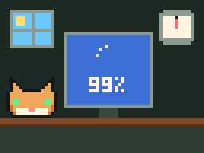
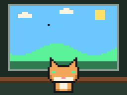

Месяц 1 · Урок 4 · Центр Памятьвиля
Хранение и картинка: диски, видеокарта, порты
Самый плотный урок месяца. Единицы и скорости, устройство HDD и SSD, кадр как массив байтов, GPU и версии портов. Здесь много расчётов: возьми листок и ручку.
Мем недели
USB: вставляю правильно с первого раза
Попытка 1 и попытка 3: одна и та же сторона. Учёные бессильны
Почему так происходит и почему USB-C эту проблему решил, расскажем в конце.

Вопрос на разогрев. Тариф дома 100 Мбит/с, а Steam качает игру со скоростью около 11 МБ/с. Провайдер обманывает? Запиши свой ответ, к концу первого блока проверишь.
Диски: где данные живут годами
Оперативная память теряет всё без питания. Накопитель хранит систему, программы и файлы, пока его не сотрут. От него зависит, как быстро грузится система и открываются проекты. Но прежде чем сравнивать диски, нужно говорить на одном языке единиц.
Единицы: бит, байт и две системы приставок
Маленькая б (b) это бит, большая Б (B) это байт. В байте 8 бит. Скорость сети провайдеры пишут в битах: Мбит/с (Mbps). Размеры файлов и скорость копирования пишут в байтах: МБ/с (MB/s). Это два разных числа для одной и той же скорости.
Как перевести Мбит/с в МБ/с и посчитать, за сколько минут скачается игра. Почему реальная скорость всегда чуть ниже теоретической.
Вторая ловушка: приставки. В обычной жизни «кило» значит 1000. Но компьютеру удобнее степени двойки, поэтому есть две системы.
| Десятичные (SI) | Двоичные (IEC) | Кто ими пользуется |
|---|---|---|
| кБ, kB = 1000 байт | КиБ, KiB = 1024 байта | Производители дисков пишут десятичные. Windows считает двоичные, но подписывает их «ГБ». macOS с 2009 года считает десятичными. |
| МБ = 1000 кБ | МиБ = 1024 КиБ | |
| ГБ = 1000 МБ | ГиБ = 1024 МиБ | |
| ТБ = 1000 ГБ | ТиБ = 1024 ГиБ |
Байтов на диске ровно столько, сколько обещано на коробке. Меняется только число, которым их описывают. Поэтому новый диск «1 ТБ» в Windows выглядит заметно меньше, и это не брак.
Почему диск «1 ТБ» Windows показывает как 931 ГБ и как посчитать это для любого диска: 256 ГБ, 512 ГБ, 2 ТБ.
HDD: механика и миллисекунды
HDD (Hard Disk Drive) это стопка магнитных пластин на одной оси и блок головок на поворотном рычаге (актуаторе). Пластины крутятся со скоростью 5400 или 7200 оборотов в минуту, серверные до 10 000–15 000. Головка летит над поверхностью на высоте в несколько нанометров и меняет намагниченность крошечных участков.
Чтобы прочитать данные, нужно две вещи. Сначала поиск (seek): рычаг переводит головку на нужную дорожку, в среднем 8–12 мс. Потом ожидание вращения: нужный сектор должен подъехать под головку. Чем быстрее крутится пластина, тем меньше ждать.
Как из оборотов в минуту получить среднюю задержку вращения в миллисекундах. Почему 7200 об/мин заметно лучше 5400.
Отсюда главное свойство HDD. Последовательное чтение большого файла идёт быстро: 150–280 МБ/с, головка просто стоит, а дорожка бежит под ней. Случайное чтение тысяч мелких файлов падает до 1–2 МБ/с: на каждый файл снова поиск и ожидание. Около сотни операций в секунду против десятков и сотен тысяч у SSD. Поэтому Windows на HDD «думает» при каждом клике: система состоит из тысяч мелких файлов.
Слабые места: механика боится ударов во время работы, а сам диск шумит и греется. Сильное место: цена за терабайт. Для архивов, бэкапов и видеотек HDD всё ещё выгоднее.
SSD: NAND, контроллер и износ
SSD (Solid State Drive) хранит данные в микросхемах флеш-памяти NAND. Ячейка удерживает заряд в изолированной ловушке, и он не уходит без питания. Чтобы прочитать ячейку, контроллер измеряет, сколько в ней заряда.
| Тип | Бит в ячейке | Плюсы | Минусы |
|---|---|---|---|
| SLC | 1 | Быстрая и очень живучая | Дорогая, сейчас почти только как кэш |
| MLC | 2 | Баланс | Редкость в потребительских SSD |
| TLC | 3 (8 уровней заряда) | Основной тип сегодня | Ресурс ниже, чем у MLC |
| QLC | 4 | Дёшево и ёмко | Медленная запись после кэша, ресурс ещё ниже |
Чем больше бит в ячейке, тем больше уровней заряда нужно различать, тем дешевле гигабайт, но медленнее запись и меньше ресурс. Чтобы скрыть медленную запись, часть ячеек работает в быстром режиме SLC-кэша. Когда пишешь сотни гигабайт подряд, кэш заканчивается, и скорость дешёвого QLC может упасть ниже, чем у HDD.
Главная хитрость NAND: писать можно страницами (килобайты), а стирать только целыми блоками (мегабайты). Перезаписать байт «на месте» нельзя. Поэтому в SSD есть свой процессор, контроллер. Он пишет новые данные в чистое место, позже собирает мусор, распределяет запись по всем ячейкам (wear leveling) и исправляет ошибки.
Команда TRIM: система сообщает SSD, какие блоки после удаления файлов больше не нужны. Контроллер заранее их очищает, и запись не тормозит. Побочный эффект: удалённое с SSD почти невозможно восстановить. Дефрагментация SSD не нужна: к любой ячейке доступ одинаково быстрый, а лишняя запись тратит ресурс.
Ресурс указывают в TBW (терабайт записи по гарантии), например 600 TBW для TLC на 1 ТБ. Чтение ресурс почти не тратит.
Как по TBW и твоей нагрузке посчитать, на сколько лет хватит SSD. Почему для обычного ученика это почти всегда десятки лет.
SATA, NVMe, M.2: форма, интерфейс и протокол
Три слова, которые постоянно путают:
- M.2 это форм-фактор: размер планки и разъём. 2280 значит 22 мм в ширину и 80 мм в длину. Внутри M.2 бывает и SATA, и NVMe.
- SATA III это интерфейс на 6 Гбит/с. Его потолок около 600 МБ/с, SATA SSD дают около 550. Работает по протоколу AHCI, который придумали для HDD: одна очередь на 32 команды.
- NVMe это протокол поверх шины PCIe. До 65 535 очередей по 65 536 команд, диск говорит с процессором почти напрямую.
PCIe состоит из линий (lanes). Каждое новое поколение примерно удваивает скорость одной линии. NVMe SSD обычно занимает 4 линии, видеокарта 16.
| Поколение PCIe | 1 линия, около | x4 (SSD), около | Типичный SSD |
|---|---|---|---|
| 3.0 | 1 ГБ/с | 3,9 ГБ/с | до 3500 МБ/с |
| 4.0 | 2 ГБ/с | 7,9 ГБ/с | до 7000–7400 МБ/с |
| 5.0 | 4 ГБ/с | 15,8 ГБ/с | до 14 000 МБ/с |
Устройства PCIe совместимы в обе стороны: новый SSD работает в старом слоте и наоборот. Но скорость при этом не всегда та, что на коробке.
Правило слабого звена: какая скорость получится, если SSD одного поколения вставить в слот другого поколения или с меньшим числом линий. Это же правило работает для HDD → SSD, USB и кабелей мониторов.
| HDD 7200 | SATA SSD | NVMe PCIe 4.0 | |
|---|---|---|---|
| Последовательно | 150–280 МБ/с | около 550 МБ/с | 5000–7400 МБ/с |
| Задержка доступа | около 10–15 мс | около 0,1 мс | меньше 0,1 мс |
| Мелкие случайные файлы | 1–2 МБ/с | десятки МБ/с | десятки и сотни МБ/с |
| Цена за ТБ | Ниже всех | Средняя | Выше, но разрыв сокращается |

Бит Байт
Смотри на задержку, а не только на МБ/с. Системе важнее, как быстро диск отвечает на тысячи мелких запросов, чем рекорд на одном большом файле.
Включил компьютер «на минутку»

99 % весь день, потом 100 %, потом снова 0 %
Надёжность: RAID и бэкап 3-2-1
RAID объединяет несколько дисков в один массив. RAID 0 режет данные на куски по дискам: быстрее, но умер один диск, пропало всё. RAID 1 пишет одно и то же на два диска (зеркало): переживёт поломку одного диска.
Но RAID это не бэкап. Удалил папку, поймал вирус-шифровальщик, сохранил испорченный файл: зеркало мгновенно повторит ошибку на втором диске. От этого спасает только отдельная копия.
Правило 3-2-1: три копии данных, на двух разных типах носителей, одна из них в другом месте (облако или диск у родственников). Диски сообщают о своём здоровье через SMART: счётчики ошибок, температура, износ.
Флешки и карты памяти
Внутри та же NAND, но самые дешёвые чипы и контроллеры, часто без TRIM и без нормального распределения износа. Скорость карты обещают значки: U3 или V30 значит не меньше 30 МБ/с при записи. Флешка годится для переноса, но не для единственной копии важных файлов.
Глубже: CMR и SMR
В обычном HDD (CMR) дорожки идут рядом и не перекрываются. В SMR дорожки частично накладываются, как черепица: так плотнее и дешевле, но перезапись соседних дорожек превращается в долгую операцию. Для архива это терпимо, для RAID и постоянной записи плохо. Производители не всегда пишут тип записи на коробке.
Глубже: почему SSD не для вечного хранения в шкафу
Заряд из ячейки понемногу утекает. Новый SSD хранит данные без питания годами, а сильно изношенный по стандарту JEDEC должен держать их около года при комнатной температуре. Для долгого архива в шкафу HDD, ленты и облако надёжнее, а SSD лучше иногда включать.
Картинка: кадр, поток и видеокарта
Пиксель и цвет: RGB, HEX, глубина цвета
Экран это сетка пикселей. Каждый пиксель собран из трёх субпикселей: красного, зелёного и синего (RGB). Яркость каждого канала задаётся числом. При 8 битах на канал это 0–255, один байт, а на весь пиксель три байта (24 бита): 256 × 256 × 256 = 16 777 216 цветов.
Свет складывается, а не смешивается, как краски. Красный + зелёный дают жёлтый, все три на полную дают белый, все выключены дают чёрный. Цвет записывают в HEX как #RRGGBB: каждая пара цифр это один байт одного канала.
#FF0000 → красный · #00FF00 → зелёный · #0000FF → синий
#FFFF00 → жёлтый · #000000 → чёрный · #FFFFFF → белый
Глубина цвета показывает, сколько бит на канал. Дешёвые матрицы бывают 6-битные (с подмешиванием оттенков), HDR-мониторы используют 10 бит на канал: переходы на небе и в тенях становятся плавнее, без полос.
Разрешение и кадр в памяти
| Название | Разрешение | Пикселей |
|---|---|---|
| HD | 1280 × 720 | около 0,9 млн |
| Full HD | 1920 × 1080 | около 2,1 млн |
| QHD (1440p) | 2560 × 1440 | около 3,7 млн |
| 4K UHD | 3840 × 2160 | около 8,3 млн |
Для видеокарты кадр это просто массив байтов в памяти (кадровый буфер). Пиксель за пикселем, строка за строкой. Размер массива зависит от разрешения и от того, сколько байт занимает один пиксель. В памяти пиксель часто хранят 32 битами: три цветовых канала плюс служебный канал прозрачности (RGBA).
Сколько мегабайт занимает один кадр Full HD и 4K. Почему игре нужно держать в памяти сразу несколько кадров.
Частота обновления, FPS и бюджет кадра
Частота обновления (Гц) это свойство монитора: сколько раз в секунду он физически обновляет изображение. FPS это свойство компьютера: сколько кадров в секунду успевает подготовить игра. Это разные вещи. Монитор 60 Гц не покажет больше 60 новых кадров, даже если игра выдаёт 300 FPS.
У каждого кадра есть бюджет времени: за него нужно обработать ввод, физику, логику и нарисовать сцену. Не уложился, и кадр задержится: это и есть рывки и «фризы».
Сколько миллисекунд у компьютера на один кадр при 60, 144 и 240 FPS и как по времени кадра узнать FPS. Почему 144 Гц предъявляет к железу жёсткие требования.
Если видеокарта меняет кадр в момент, когда монитор выводит прошлый, получается разрыв (tearing): верх экрана из одного кадра, низ из другого. V-Sync заставляет ждать монитор, но добавляет задержку. G-Sync и FreeSync (VRR) делают наоборот: монитор подстраивает частоту под видеокарту.
Поток данных к монитору
Монитор не хранит картинку. Каждый кадр заново приходит по кабелю, 60, 144 или 240 раз в секунду. Значит, кабель должен непрерывно пропускать огромный поток данных. Кроме пикселей, по нему идут служебные данные и кодирование, поэтому реальное требование выше «чистого» потока. Если поток не помещается, остаётся снизить частоту, глубину цвета или включить сжатие DSC.
Как из ширины, высоты, глубины цвета и герц получить поток данных в Гбит/с. Именно так выбирают кабель и порт для монитора в третьем блоке.
GPU против CPU
CPU это несколько (4–24) сложных ядер с большими кэшами и предсказанием переходов. Они оптимизированы на то, чтобы одна запутанная задача выполнилась как можно быстрее. GPU это тысячи простых вычислительных блоков, которые выполняют одну и ту же операцию над огромным количеством данных одновременно. Он оптимизирован на пропускную способность.
Рисование сцены идеально ложится на GPU: вершины моделей пересчитываются в координаты экрана, треугольники разбиваются на пиксели (растеризация), для каждого пикселя считается цвет с учётом света и текстур (шейдеры). Миллионы пикселей считаются независимо друг от друга. По той же причине на GPU обучают нейросети: там тоже гигантские однотипные вычисления.
VRAM: память видеокарты
У отдельной видеокарты своя память VRAM (GDDR6, GDDR6X, GDDR7). В ней текстуры, модели, кадровые буферы. Важен не только объём, но и пропускная способность: у видеокарт широкая шина памяти (128–512 бит) и очень быстрые контакты, поэтому получаются сотни гигабайт в секунду, у топовых больше 1,5 ТБ/с. Для сравнения, двухканальная DDR5 даёт около 100 ГБ/с.
Как по ширине шины и скорости памяти посчитать пропускную способность VRAM.
Встроенная графика живёт внутри процессора и забирает часть оперативной памяти. Для учёбы, видео и лёгких игр хватает. Если VRAM не хватает, игра начинает подгружать текстуры через медленную шину, и появляются фризы: помогает снижение качества текстур.
Бит Байт
Запомни цепочку: игра готовит кадр за свой бюджет, GPU рисует его в VRAM, кабель тащит его к монитору, монитор обновляется со своей частотой. Тормозит самое слабое звено.
Нашёл битый пиксель на новом мониторе

Пиксель оказался не битым, а с крыльями
Глубже: IPS, VA, TN и OLED
TN быстрые и дешёвые, но с плохими углами обзора. IPS дают точные цвета и хорошие углы. VA дают глубокий чёрный, но иногда шлейфы в тёмных сценах. В OLED каждый пиксель светится сам и может полностью выключиться: идеальный чёрный и мгновенный отклик, но статичные элементы со временем могут выжигаться.
Глубже: мёртвый и застрявший пиксель
Мёртвый пиксель не светится совсем и всегда чёрный. Застрявший горит одним цветом, потому что один субпиксель не выключается. Чаще всего это заводской брак матрицы, проверять монитор стоит сразу после покупки.
Разъёмы: форма, версия и скорость
Форма разъёма говорит, что физически можно воткнуть. Скорость и возможности определяет версия стандарта, причём и у порта, и у кабеля, и у устройства. Реальная скорость равна самому медленному участку цепочки.
USB: путаница в названиях
Организация USB-IF несколько раз переименовывала одни и те же стандарты. Поэтому один и тот же порт может называться тремя именами.
| Название сейчас | Старые имена | Скорость | Реально, около |
|---|---|---|---|
| USB 2.0 Hi-Speed | 480 Мбит/с | 30–40 МБ/с | |
| USB 3.2 Gen 1 · «USB 5Gbps» | USB 3.0, USB 3.1 Gen 1 | 5 Гбит/с | 400–450 МБ/с |
| USB 3.2 Gen 2 · «USB 10Gbps» | USB 3.1 Gen 2 | 10 Гбит/с | 900–1050 МБ/с |
| USB 3.2 Gen 2x2 · «USB 20Gbps» | 20 Гбит/с, только USB-C | около 2000 МБ/с | |
| USB4 · «USB 40Gbps» | 20 или 40 Гбит/с | до 3000–3800 МБ/с | |
| USB4 v2 · «USB 80Gbps» | 80 Гбит/с | новые устройства |
Синий язычок в USB-A обычно значит USB 3.x, красный или бирюзовый часто 10 Гбит/с. Но это традиция производителей, а не правило стандарта: надёжнее смотреть в характеристики.
Почему быстрая флешка в старом порту копирует медленно, и как посчитать потолок скорости и время копирования для любой связки «диск + порт».
USB-C: это разъём, а не скорость
USB-C это только форма: симметричный овальный разъём с 24 контактами. Внутри может быть USB 2.0, USB 3.2, USB4 или Thunderbolt, а может и не быть видео. Дешёвые кабели USB-C часто проводят данные только как USB 2.0.
- DisplayPort Alt Mode: по USB-C идёт видео на монитор, если его поддерживают порт и кабель.
- USB Power Delivery: зарядка и устройство договариваются о напряжении (5, 9, 15, 20 В, в новой версии до 48 В). Обычный кабель держит до 3 А, кабель на 5 А обязан иметь чип e-marker. Предел USB PD сейчас 240 Вт.
Как по профилю зарядки (вольты и амперы) понять, потянет ли она ноутбук, и при чём здесь кабель.
Thunderbolt
Thunderbolt 3 и 4 дают 40 Гбит/с через USB-C и могут вести по одному кабелю данные, видео, сеть и зарядку: на этом работают док-станции. Thunderbolt 4 построен на основе USB4, но с более строгими обязательными требованиями. Thunderbolt 5 даёт 80 Гбит/с, а для мониторов до 120 Гбит/с в одну сторону. Значок молнии рядом с портом означает Thunderbolt.
Видео: HDMI и DisplayPort
| Версия | Полоса | Типичный максимум |
|---|---|---|
| HDMI 1.4 | 10,2 Гбит/с | 4K 30 Гц, 1080p 120 Гц |
| HDMI 2.0 | 18 Гбит/с | 4K 60 Гц |
| HDMI 2.1 | 48 Гбит/с | 4K 120–144 Гц, 8K 60 Гц |
| DisplayPort 1.2 | 21,6 Гбит/с | 4K 60 Гц |
| DisplayPort 1.4 | 32,4 Гбит/с | 4K 120 Гц, 1440p 240 Гц |
| DisplayPort 2.1 | до 80 Гбит/с | 4K 240 Гц, 8K |
Полоса в таблице это сырая скорость линии. Часть её уходит на кодирование и служебные интервалы, поэтому для расчёта оставляют запас. HDMI чаще стоит на телевизорах и консолях, DisplayPort на видеокартах и игровых мониторах. VGA аналоговый: цифру переводят в аналог и обратно, поэтому картинка на современном мониторе мыльная. DVI цифровой, но устарел.
Сеть и звук
- RJ-45 (Ethernet): дома обычно 1 Гбит/с (кабель категории 5e), бывают порты 2,5 Гбит/с, для 10 Гбит/с нужен кабель категории 6a.
- Аудио 3,5 мм: штекер TRS это стерео (три контакта), TRRS добавляет микрофон, так устроены гарнитуры телефонов. На ПК зелёное гнездо для наушников, розовое для микрофона.
Внутри корпуса
| Разъём | Для чего | Подвох |
|---|---|---|
| SATA data (7 pin) + SATA power (15 pin) | HDD и SATA SSD | Два разных кабеля: данные и питание |
| M.2 (ключ M, иногда B+M) | NVMe или SATA SSD | Слот может поддерживать только один протокол |
| PCIe x16 / x4 / x1 | Видеокарта, сетевые и другие карты | Длинный слот бывает электрически x4 |
| 24 pin ATX | Основное питание платы | Урок 3 |
| 8 pin EPS (CPU) | Питание процессора | Похож на PCIe 8 pin, но это другой разъём |
| PCIe 8 pin, 12V-2x6 (16 pin) | Питание видеокарты | Слот даёт только 75 Вт, остальное по кабелю |
Куда подключать монитор
Если в компьютере есть отдельная видеокарта, монитор подключают к её выходам, а не к выходам на материнской плате. Выходы на плате работают только со встроенной графикой процессора. Если встроенной графики нет, картинки не будет вовсе. Если есть, рисовать будет она, а дорогая видеокарта простаивает.
Купил видеокарту за 300 000 тенге

воткнул монитор в материнку
Глубже: почему USB-A вставляется с третьего раза
USB-A работает только одной стороной, а снаружи стороны почти не отличаются. Шанс угадать 50 %, но разъём ещё и тугой, и неудачная попытка в правильном положении кажется ошибкой. USB-C сделали симметричным: контакты продублированы, и он работает любой стороной.

Бит Байт
Это был последний урок месяца. Впереди экзамен по урокам 1–4 с расчётами. Конспект с урока будет твоим главным оружием.
Повтори, исследуй и сдай ДЗ
Коротко
- Сеть в битах (Мбит/с), файлы в байтах (МБ/с). Диски на коробке в десятичных ГБ, Windows в двоичных.
- HDD: поиск + ожидание вращения, быстрый последовательно, очень медленный на мелких случайных файлах.
- SSD: NAND (TLC, QLC), контроллер, SLC-кэш, TRIM, ресурс в TBW.
- M.2 это форма, SATA и NVMe это интерфейс и протокол. PCIe: поколение и число линий.
- RAID не бэкап. Правило 3-2-1.
- Кадр это массив байтов. Поток к монитору зависит от разрешения, глубины цвета и частоты.
- Гц у монитора, FPS у компьютера, у каждого кадра бюджет в миллисекундах.
- GPU: тысячи простых ядер, VRAM с огромной пропускной способностью.
- USB-C это разъём, а не скорость. Версия USB, HDMI и DP решает, что потянет связка.
- Везде работает правило слабого звена.
Практика дома
Делай задания сам и записывай ответы: их нужно будет ввести в форму ДЗ ниже. Ничего не разбирай, не открывай корпус и не выдёргивай кабели из работающей техники. Фото делай только со своей техники или с разрешения взрослых.
- Разведка накопителя. На компьютере: Диспетчер задач → Производительность → Диск (там видно тип: SSD или HDD) и Параметры → Система → Память. На телефоне: Настройки → Память (Хранилище). В форму: тип накопителя, объём по характеристикам, сколько показывает система, сколько свободно. Объясни разницу между первым и вторым числом с расчётом.
- Разведка экрана. Компьютер: Параметры → Система → Дисплей (разрешение) и Дополнительные параметры дисплея (частота). Телефон: настройки экрана (60, 90, 120 Гц). В форму: разрешение и частота, число пикселей, размер одного кадра при 24 битах на пиксель, поток в Гбит/с и бюджет кадра в мс.
- Охота на порты. Сфотографируй заднюю панель компьютера, боковины ноутбука или заднюю стенку телевизора. На фото или на листке подпиши каждый разъём и, где можно, его версию (по значкам и подписям). В форму: список разъёмов с назначением. Фото покажи на следующем уроке.
- Интернет. Узнай у родителей тариф (в Мбит/с) или посмотри скорость загрузки в магазине игр. В форму: тариф, сколько это МБ/с в теории, за сколько минут скачается игра на 80 ГБ.
- Задачи на бумаге. Решай с пояснениями, ответы в форму:
- Сколько ГБ покажет Windows для нового диска 2 ТБ?
- SSD 1200 TBW, пишем 80 ГБ в день. На сколько лет хватит ресурса?
- HDD 5400 об/мин: средняя задержка вращения?
- SSD PCIe 4.0 x4 в слоте PCIe 3.0 x2: потолок скорости?
- Монитор 2560 × 1440, 165 Гц, 8 бит на канал: размер кадра в МБ и поток в Гбит/с. Хватит ли HDMI 2.0 с запасом?
- Игра держит 240 FPS. Бюджет кадра? А если кадр занимает 9 мс, сколько это FPS?
- Внешний SSD 1050 МБ/с в порту USB 3.2 Gen 1: теоретический потолок и время копирования 60 ГБ.
- Шина VRAM 192 бит, память 21 Гбит/с на контакт: пропускная способность?
- Мини-исследование (5–7 предложений, на выбор): какой один апгрейд ты бы сделал своему компьютеру или телефону и почему; или чем QLC SSD хуже TLC и кому он всё равно подходит.
- Игры. Пройди все три игры урока ещё раз без ошибок, задания каждый раз новые. В форму: лучший счёт босса.
Нейросети и решебники не помогут: в форме проверяются твои собственные числа с твоих устройств и ход решения.
Экзамен месяца
Учитель скажет, когда открыть экзамен. Он по всем урокам месяца: биты и HEX, процессор и память, диски, картинка и порты. Много задач с расчётами. Понадобятся листок, ручка и твой конспект с уроков. Результат увидят родители.